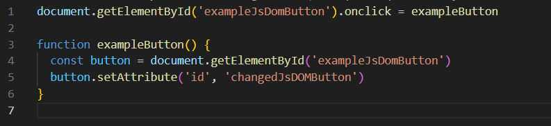

The DOM, or document object model is a representation of the 'pieces' that make up a document on the web. In our case, we will be mainly dealing with HTML documents. Each piece or element of our HTML is represented in the DOM. The DOM represents these in a tree like structure. Check out diagram below.

Notice how the html element is a branch below the document element, this will come in handy when it comes to accessing the DOM.
The DOM is essential when we want to use Javascript to manipulate our HTML. Where HTML forms the bare structure of our the house that is our webpage, and CSS makes it pretty. (Think of CSS as the paint, furnishings and decorations in our house) Javascript allows us to make the house interactive and exciting. Think of it like adding sensor lights or automatic doors.
Let's say we wanted to add an interactive button to our page.
Notice how the button turns gray when we click on it. This is because we have written code that changes the id of the button when it is clicked on. Check out the below code, paying attention to the first line.
The first part of the first line is accessing the DOM, through the document part, which is what '.document' is for. The next section, 'getElementById' selects the relevant element with that id. '.onclick' allows the parts after the equals sign to run once the element is clicked on.
Finally, the section afterwards the equals sign 'exampleButton', this runs the section below once the button is clicked.
That part of the code is a 'function', which is what allows us to only type 'exampleButton' in the above section. A function is where name a section of code. This allows us to run that code, over and over throughout our file, by only typing the name of it. (Also known as 'calling the function')
Control flow is the order in which the code we write is executed, which is typically from the first line down, in order. Take for example, making a bowl of cereal.
However, 'loops' can alter our control flow, let's say we were making cereal for a more people. We would repeat steps 1 through 3 untill we had made enough bowls for everyone. Only then would we enjoy our cereal. Afterall, you wouldn't make a bowl for only person and then start eating.
'Conditionals' can also alter our control flow, let's say we had an odd person who put their milk first. So if the bowl was for that person, we would swap steps 2 and 3.
When it comes to code, this same thing can happen, if we wanted to do the same thing over and over. Also we might want to only do something if some 'condition' is fufilled, like a box being checked on our page.